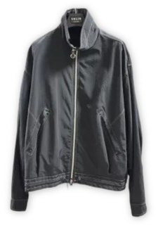
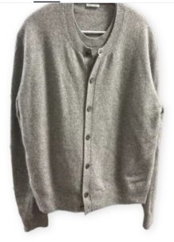
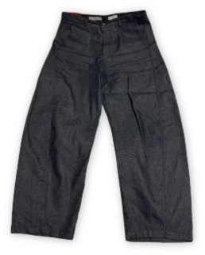
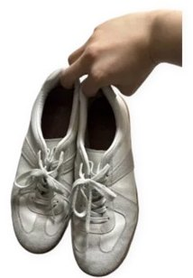
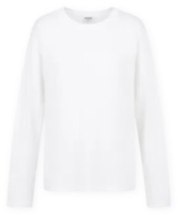
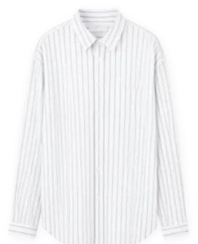
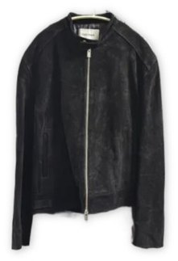
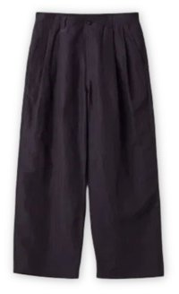
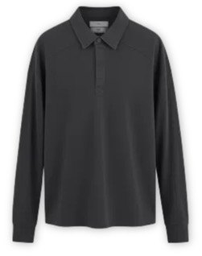

낮 16°까지 올라 포근하지만 오전부터 낮 사이 약한 비(1mm 안팎)가 지나가요. 젖어도 괜찮은 겉옷과 가죽 신발을 고르고 작은 우산을 챙기세요. 근무 일정표에 없는 날이라 추정했어요. 캘린더도 볼 수 없어 평일이라 근무로 봤어요.
1 / 6
추천
SOLID HOMME 차콜 나일론 재킷 + POTTERY 차콜 폴로 니트
패딩 전 단계인 요즘은 코트 대신 가벼운 재킷 안에 니트를 받쳐 입는 레이어드가 많이 보여요. 비 예보가 있어 물에 강한 SOLID HOMME 차콜 나일론 재킷을 겉에 두고, 같은 차콜의 POTTERY 폴로 니트로 9° 아침 보온을 챙겼어요. 차콜과 블랙만 쓴 톤온톤이라 색은 조용하고 나일론과 니트의 소재 차이로 깊이를 냈어요.

재킷SOLID HOMME 차콜 나일론 재킷
가벼운 비는 튕겨내는 나일론이라 우산 없이 잠깐 걸어도 부담이 없어요. 실내에선 벗어 두기 쉬워요.
니트POTTERY 차콜 폴로 니트
폴로 깃이 재킷의 하이넥 안에서 셔츠처럼 보여 근무복으로 단정해요.
정장바지SOLID HOMME 블랙 테이퍼드 정장바지
SOLID HOMME 블랙 테이퍼드 정장바지로 재킷의 스포티한 느낌을 단정하게 눌러 줘요.
로퍼HARUTA 블랙 페니 로퍼
비에 괜찮은 HARUTA 블랙 페니 로퍼. 병원 신발장에도 잘 들어가요.
크로스백생로랑 블랙 나일론 크로스백
생로랑 블랙 나일론 크로스백은 젖어도 걱정이 없어요.
대안
RECTO 그레이 가디건 + POTTERY 화이트 스트라이프 셔츠
낮 16°의 포근함에 맞춘 가벼운 버전이에요. RECTO 그레이 가디건 안에 POTTERY 화이트 스트라이프 셔츠를 받쳐 그레이 톤으로 정리했고, 실내 근무 시간이 길 때 편해요. 아침 출근길은 쌀쌀하니 우산을 꼭 챙기세요.

가디건RECTO 그레이 가디건
단추를 두세 개만 잠가 셔츠 깃과 스트라이프가 보이게 입어요.
셔츠POTTERY 화이트 스트라이프 셔츠
가는 스트라이프가 그레이 가디건 안에서 은은한 무늬 역할을 해요.

청바지siiido 차콜 커브드 청바지
siiido 차콜 커브드 청바지로 가디건보다 한 톤 어둡게 받쳐요.

스니커즈화이트 레더 스니커즈
비에 괜찮은 화이트 레더 스니커즈로 셔츠의 흰색과 맞춰요.
숄더백르메르 블랙 호보 숄더백
르메르 블랙 호보 숄더백.
대안
TIME HOMME 차콜 재킷 + artifact 블랙 브이넥 니트
조금 더 차려입은 결이에요. TIME HOMME 차콜 재킷 안에 artifact 블랙 브이넥 니트와 화이트 티를 겹쳐 목선에 흰색 한 줄만 보이게 했어요. 아래는 블랙으로 내려 퇴근 후 약속이 생겨도 그대로 갈 수 있어요.
재킷TIME HOMME 차콜 재킷
울 재킷이라 비가 굵어지면 우산을 꼭 써요. 엉덩이를 살짝 덮는 길이라 코트보다 가벼워요.
니트artifact 블랙 브이넥 니트
브이넥이라 재킷 깃과 겹쳐도 목이 답답하지 않아요.

긴팔 티ZAVANAS 화이트 긴팔 티
ZAVANAS 화이트 긴팔 티를 받쳐 브이넥 사이로 흰색을 살짝 보여 줘요.
정장바지블랭크룸 블랙 투턱 정장바지
블랭크룸 블랙 투턱 정장바지로 하체를 길게 정리해요.
부츠ROMANTIC MOVE 블랙 첼시 부츠
ROMANTIC MOVE 블랙 첼시 부츠는 젖은 길에도 발목까지 안전해요.
숄더백르메르 블랙 호보 숄더백
르메르 블랙 호보 숄더백.
옷장 자동 조합
POTTERY 화이트 스트라이프 셔츠 + TONYWACK 블랙 스웨이드 재킷
같은 날씨와 격식 기준(무채색 위주, 포인트 컬러는 하나까지)으로 옷장에서 자동으로 고른 조합이에요.

셔츠POTTERY 화이트 스트라이프 셔츠

재킷TONYWACK 블랙 스웨이드 재킷

정장바지쿠어 네이비 투턱 정장바지
부츠ROMANTIC MOVE 블랙 첼시 부츠
숄더백르메르 블랙 호보 숄더백
옷장 자동 조합
siiido 차콜 폴로 카라 티 + ART IF ACTS 블랙 가디건
같은 날씨와 격식 기준(무채색 위주, 포인트 컬러는 하나까지)으로 옷장에서 자동으로 고른 조합이에요.

카라 티siiido 차콜 폴로 카라 티
가디건ART IF ACTS 블랙 가디건
청바지REVISE 블루 스트레이트 청바지
스니커즈아이보리 레더 스니커즈
숄더백르메르 블랙 호보 숄더백
옷장 자동 조합
ZAVANAS 블랙 긴팔 티 + 폴로 랄프 로렌 라이트그레이 후드 집업
같은 날씨와 격식 기준(무채색 위주, 포인트 컬러는 하나까지)으로 옷장에서 자동으로 고른 조합이에요.

 니트POTTERY 차콜 폴로 니트
니트POTTERY 차콜 폴로 니트 정장바지SOLID HOMME 블랙 테이퍼드 정장바지
정장바지SOLID HOMME 블랙 테이퍼드 정장바지 로퍼HARUTA 블랙 페니 로퍼
로퍼HARUTA 블랙 페니 로퍼 크로스백생로랑 블랙 나일론 크로스백
크로스백생로랑 블랙 나일론 크로스백